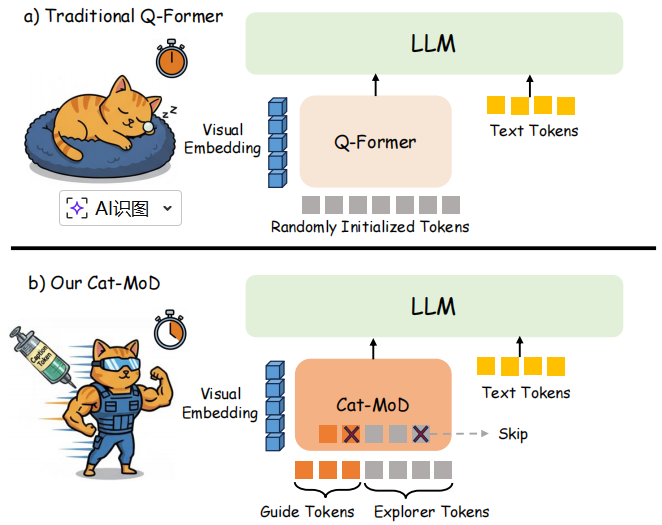
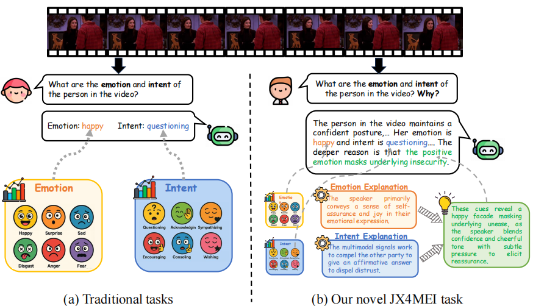
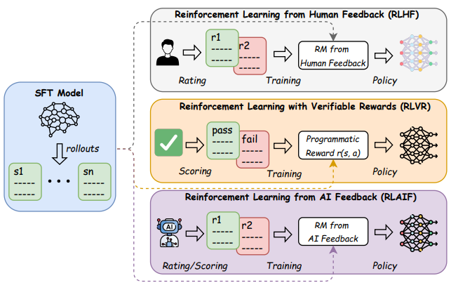

|
Yijie Huang
Hey there! I'm Yijie Huang, a second-year master's student at Northeastern University, and I'm about to level up to PhD life. Exciting times ahead!
My research lives at the intersection of Multimodal Large Language Models (MLLMs), Agent and Affective Computing, basically, I'm fascinated by how AI can see, understand, and even feel the world around it.
Looking ahead, I plan to dive deeper into the intersection of Embodied AI and Vision-Language-Action Model(VLA) during my PhD, exploring how agents can not only follow instructions, but also sense context and respond with a kind of human-like awareness.
Email /
CV /
Bio /
Scholar /
Github
|
|
|

|
Cat-MoD: Accelerating Multimodal Alignment via Caption Token Guided Asymmetric Mixture-of-Depths
Yijie Huang, Xiaocui Yang, Shi Feng, Wen Zhang,
Kaisong Song, Yifei Zhang, Daling Wang
ACL, 2026
paper /
code
Cat-MoD improves multimodal alignment efficiency by introducing caption-guided query initialization and an asymmetric mixture-of-depths routing mechanism. It preserves strong performance while reducing redundant cross-attention computation, cutting alignment FLOPs by about 37% in both training and inference.
|
|

|
JX4MEI: Multimodal Semantically-Enhanced LLM for Joint Multimodal Emotion-Intent Explanation and Classification
Yijie Huang, Xiaocui Yang, Shi Feng, Daling Wang,
Yifei Zhang, Ning Yuan, Zhuoyue Jia, Wen Zhang
ACL, 2026
paper /
code
JX4MEI introduces a new task for jointly predicting multimodal emotion and intent while also generating explanations for why they co-occur. The paper presents the XMEI dataset and an LQ-Former based model, showing strong gains in both classification and explanation quality.
|
|

|
Affective Computing in the Era of Large Language Models: A Survey from the NLP Perspective
Yiqun Zhang, Xiaocui Yang, Xingle Xu, Zeran Gao, Yijie Huang,
Shiyi Mu, Shi Feng, Daling Wang, Yifei Zhang, Kaisong Song, Ge Yu
KBS, 2026
paper
This survey reviews affective computing in the era of large language models from an NLP perspective. It organizes core tasks in affective understanding and generation, summarizes adaptation methods such as instruction tuning, prompt engineering, and reinforcement learning, and discusses benchmarks, evaluation practice, and open challenges for reliable affect-aware LLM systems.
|
|
{kind=link}